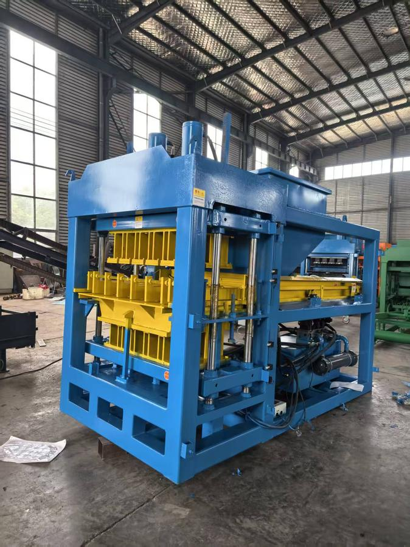
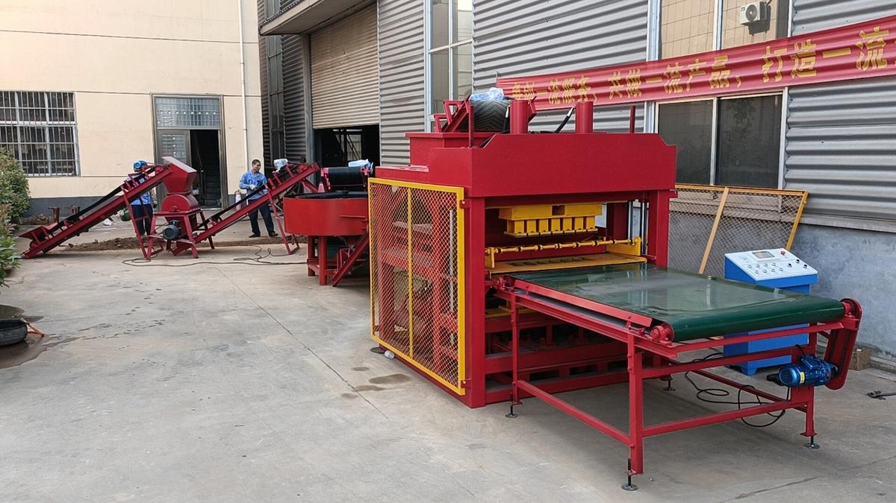
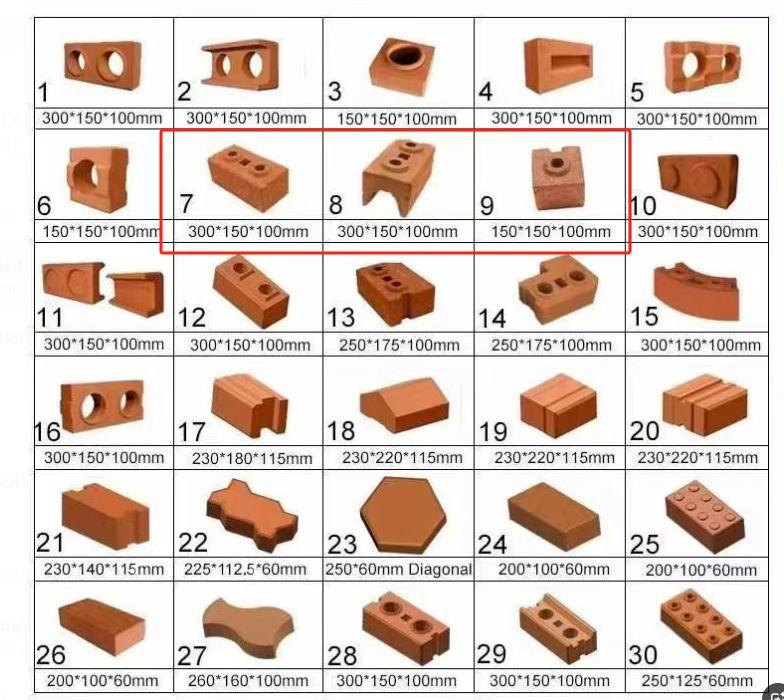
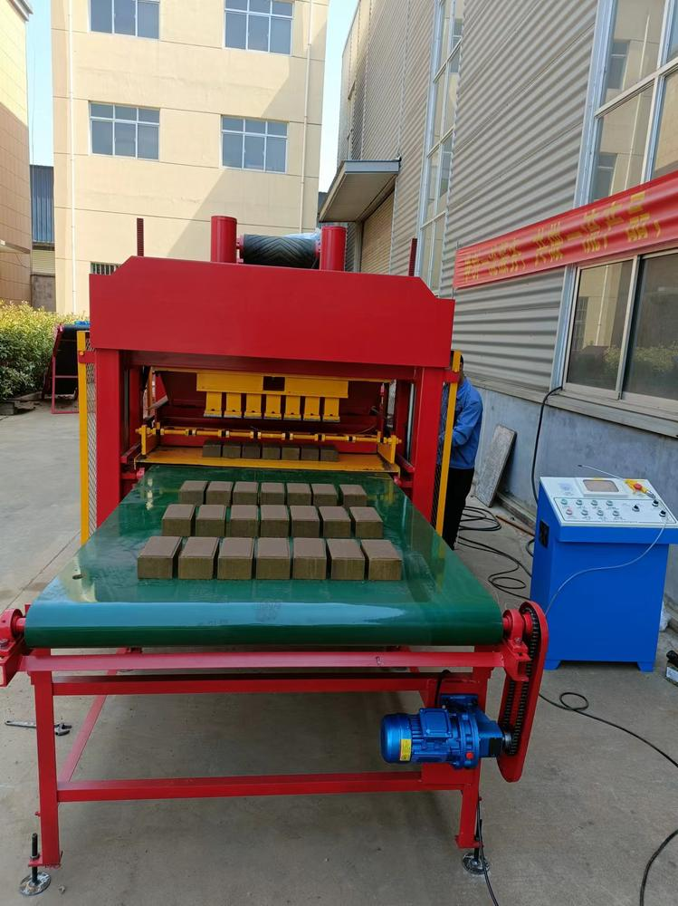

Presse à Brique en Argile NT7-10
La NT7-10 est notre presse à brique en argile dédiée aux marchés africains et d'Asie du Sud-Est où les briques en argile rouge restent le matériau de construction dominant. Alors que nos QT4-40 et QT4-40A produisent des blocs de sable-ciment, la NT7-10 utilise une compaction mécanique haute pression pour transformer le sol argileux brut en briques d'argile pleines et creuses qui sèchent au soleil — aucun four n'est requis pour la gamme de base. L'hôte de 22 kW produit un moule de 7 briques toutes les 15 secondes, ce qui signifie qu'un seul poste peut produire 20 000 briques finies.


Ce qui est Inclus dans la Ligne NT7-10
La NT7-10 est livrée comme une ligne clé en main complète, pas seulement une presse. Chaque machine de la ligne est adaptée en capacité et en puissance pour que vous puissiez commencer à produire dès le premier jour. Toute la ligne tient dans un conteneur de 20 pieds.
- Machine hôte NT7-10 — moteur 15 kW (ou diesel 18 HP), 2 000 kg, moule 7 pièces
- Boîtier de commande PLC — fonctionnement semi-automatique, un opérateur
- Mélangeur à béton JQ350 — 5,5 kW, 350 L, adapté au débit de l'hôte
- Broyeur de sol — 3–5,5 kW, 5–10 T/jour, brise les mottes d'argile à <300 mm
- Tamis à sol — 3 kW, 480 kg/h, tambour 500 mm, retire les pierres
- Convoyeur à bande × 3 — options 6 m / 12 m / 7 m, largeur 500 mm, 0,75 kW, 150 kg chacun
- Moule standard (300 × 150 × 100 mm, 7 pièces/moule) — inclus
- Moules supplémentaires — moules supplémentaires inclus gratuitement
- Outils spéciaux et pièces de rechange — inclus gratuitement
- Emballage — 1 × conteneur 20 pieds, nu
Spécifications Techniques
① Machine Principale (Hôte NT7-10)
| Paramètre | Valeur |
|---|---|
| Modèle | NT7-10 (nom domestique HBY7-10) — presse à briques d'argile directe |
| Productivité par moule | 300 × 150 × 100 mm — 7 pièces / moule |
| Puissance | Moteur électrique 15 kW (ou moteur diesel 18 HP — en option) |
| Temps de cycle | 7–10 secondes / moule |
| Production horaire | 2 520 briques (300×150×100, moule 7-pc) / 2 880 briques (250×125×70, moule 8-pc) |
| Capacité par équipe | 20 160 – 23 040 briques / équipe de 8 h |
| Poids machine | 2 000 kg |
| Dimensions machine | 1800 × 1600 × 2100 mm |
| Électrique | 380 V / 50 Hz (réglable) |
| Pression hydraulique | 18–31 MPa |
| Matière première | Sol brun, lœss ou argile rouge, sable, ciment, eau (ratio variable) |
| Dimensions d'expédition | 1000 × 1200 × 1800 mm (emballage nu, 1× conteneur 20 pi) |
| Poids d'expédition | 2 000 kg |
② Mélangeur à Béton JQ350 (inclus)
| Paramètre | Valeur |
|---|---|
| Modèle | JQ350 — mélangeur à béton pour mélange argile-ciment |
| Puissance | 5,5 kW |
| Capacité | 350 L par lot |
| Temps de cycle | ≈ 3 minutes / lot |
| Poids du mélangeur | 700 kg |
| Dimensions | 1200 × 1200 × 900 mm |
③ Broyeur de Sol
| Paramètre | Valeur |
|---|---|
| Fonction | Broye mottes d'argile, pierres, agrégats de sable pour alimenter le mélangeur |
| Taille d'alimentation max | 300 × 400 mm |
| Diamètre du tambour | 500 mm |
| Capacité | 5–10 T / jour |
| Puissance | 3–5,5 kW |
| Poids | 290 kg |
| Dimensions | 1200 × 600 × 1200 mm |
④ Tamis à Sol
| Paramètre | Valeur |
|---|---|
| Fonction | Tamise le matériau broyé à une taille fine uniforme pour la qualité des briques |
| Diamètre du tambour | 500 mm |
| Débit | 480 kg / heure |
| Puissance | 3 kW |
| Tension | 380 V (ou 220 V sur demande) |
| Poids total | 320 kg |
⑤ Convoyeur à Bande × 3 (inclus)
| Paramètre | Valeur |
|---|---|
| Fonction | Transfère l'argile entre broyeur, tamis, mélangeur et hôte |
| Longueur de bande | 6 m / 12 m / 7 m (un de chaque inclus) |
| Largeur de bande | 500 mm |
| Vitesse de bande | 3 m / seconde |
| Puissance | 0,75 kW chacun |
| Poids | 150 kg chacun |
| Dimensions (L×l×H) | 3000 / 6000 × 600 × 400 mm (par unité) |
Pourquoi Choisir la NT7-10
La NT7-10 s'adresse aux acheteurs qui savent déjà qu'ils veulent des briques en argile, pas des blocs de ciment. Dans une grande partie de l'Afrique de l'Ouest, de l'Est et de l'Asie du Sud-Est, les briques en argile cuite ou séchée au soleil sont le matériau mural par défaut — elles sont moins chères que les blocs de ciment, elles ont une meilleure isolation thermique, et elles ne nécessitent que la terre du site de construction. La NT7-10 transforme cette terre en briques uniformes et aux arêtes nettes qui se vendent à prime sur les marchés locaux.
Contrairement aux QT4-40 et QT4-40A qui ne produisent que des blocs liés au ciment, la NT7-10 est spécifiquement conçue pour l'argile. L'hôte 22 kW, le cycle de 15 secondes, et le châssis de 3 800 kg lui donnent la force de compaction nécessaire pour presser l'argile brute en briques assez solides pour être manipulées, empilées et séchées au soleil sans se fissurer. Le mélangeur JQ750, le broyeur d'argile et le crible vibrant inclus forment une ligne complète de préparation du matériau — l'hôte reçoit une argile déjà broyée, tamisée et mélangée à la bonne teneur en humidité.
Capacité de Production par Type de Brique
Tableau de production officiel HBY7-10 (300×150×100 mm, 250×125×70 mm, 225×112.5×60 mm). Production quotidienne sur 8 heures de travail, basée sur un cycle de 7 à 10 secondes.
| Dimensions de Brique | Pièces par Moule | Pièces par Heure | Pièces par Équipe de 8 h |
|---|---|---|---|
| 300 × 150 × 100 mm | 7 pièces | 2 520 pièces | 20 160 pièces |
| 250 × 125 × 70 mm | 8 pièces | 2 880 pièces | 23 040 pièces |
| 225 × 112,5 × 60 mm | 8 pièces | 2 880 pièces | 23 040 pièces |
30 Formes de Briques Standard Incluses
Chaque NT7-10 est livré avec des moules de référence pour 30 formes standard de briques d'argile creuses. Les plus populaires en Afrique de l'Ouest et de l'Est sont #7, #8, #9 et #10 (encadré rouge dans le catalogue) — blocs d'argile porteurs à deux et trois trous aux formats 300×150 et 150×150. Les formes spéciales (pavé, diagonale, hourdis) sont également couvertes.

Vidéos de Production Réelle


Inclusions du Colis et Options
- Machine hôte NT7-10 (moteur 15 kW) — inclus
- Boîtier de commande PLC — inclus
- Mélangeur à béton JQ350 (350 L, 5,5 kW) — inclus
- Broyeur de sol / (3–5,5 kW, 5–10 T/jour) — inclus
- Tamis à sol / (3 kW, 480 kg/h) — inclus
- Convoyeur à bande × 3 (6 m / 12 m / 7 m, 0,75 kW chacun) — inclus
- Moule standard (300 × 150 × 100 mm, 7 pièces/moule) — inclus
- Moules supplémentaires (formes supplémentaires) — inclus gratuitement
- Outils spéciaux et pièces de rechange — gratuits
- Emballage : 1 × conteneur 20 pieds, emballage nu — inclus
- En option : version moteur diesel 18 HP (au lieu du moteur 15 kW) — sur demande
- En option : jeux de moules supplémentaires, générateur, palettes de séchage solaire — disponibles sur demande
Idéal Pour
- Régions riches en argile d'Afrique de l'Ouest, d'Afrique de l'Est et d'Asie du Sud-Est où les briques d'argile rouge sont la norme locale
- Acheteurs qui veulent une ligne clé en main complète dans un conteneur, pas seulement une presse
- Usines de briques de taille moyenne produisant 15 000 à 25 000 briques par jour pour les marchés locaux de la construction
- Entrepreneurs qui souhaitent ajouter la production de briques d'argile à une activité existante de blocs de sable-ciment